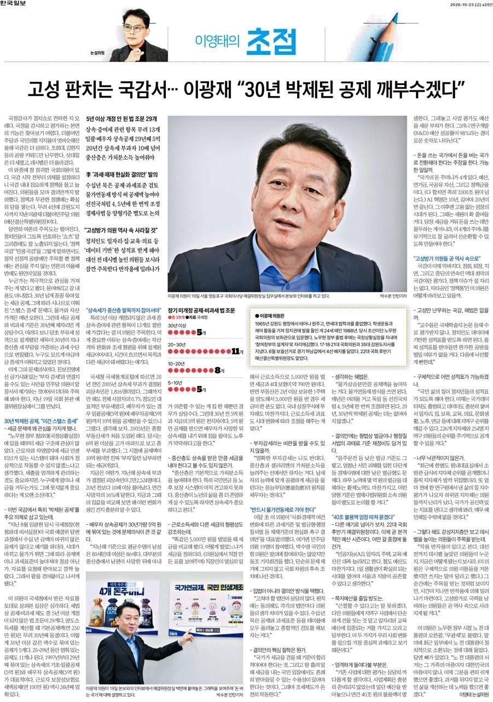

물가는 오르는데 공제는 30년째 제자리. 누구도 모르게 이뤄진 ‘스텔스 증세’를 끝냅니다.
국세청 자료로 확인한 결과, 5년 이상 개정되지 않은 공제·비과세 조문만 29개입니다.
개정 안 된 기간별 조문 자료: 국세청
대표적인 ‘박제’ 공제 동결 기간
‘부자만 내던 세금’이 20년 새 10배 넘게 늘었습니다. 29개 중 13개가 상속·증여세 항목입니다.
상속세 부과 대상 피상속인 자료: 국세청 국세통계포털
똑같이 5,000만 원을 벌었을 때 세금·4대 보험
명확한 부자감세는 반대합니다. 중산층·샐러리맨의 가처분소득을 늘리자는 겁니다.
문제 제기에 그치지 않고 국회 차원의 결의안으로 후속 조치에 나섰습니다.
물가·자산가격만 오름
부유세가 중산층 세금으로 변질
독일처럼 4~5년마다 공제액 조정
능력에 맞는 공평 과세 · 가처분소득 ↑
누가 함께했나 과세·제재 기준 현실화 결의안
공동 참여
19명더불어민주당 의원
동조 기자회견
1명국민의힘
박수영 의원
돈 쓰는 국가에서 돈 버는 국가로 — 늘릴 곳은 늘리고, 새는 곳은 막습니다.
매년 쓰지 못하고 남는 불용액
부처 ‘셀프 평가’ R&D 성공률
국가의 4개 돈주머니 합계 7,000조 원+
대폭 늘릴 예산
1일 생활권 시대를 열어야 서울과 지방이 공존할 수 있습니다.

한국일보 2026.10.23 ‘이영태의 초점’ · 이미지를 누르면 크게 볼 수 있습니다
고성 대신 국민 삶의 질로 평가받는 정치 — 데이터 기반 ‘의원 성적표’를 제안합니다.
성적표 평가 항목
개 지자체 순위 공개
명 지역구 의원 순위 공개
고성방가로 국력을 낭비하는 의원들은 곧 역사 속으로 사라질 겁니다.
한국일보 · 이영태 논설위원 ‘이영태의 초점’